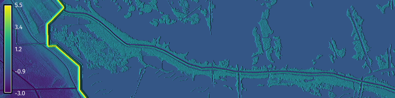
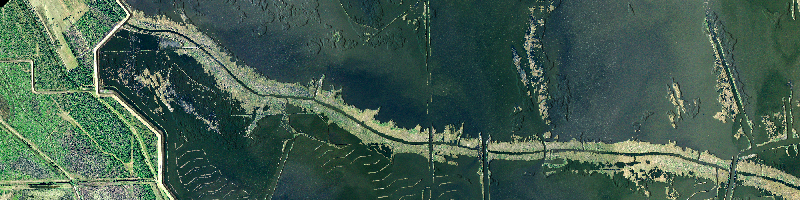
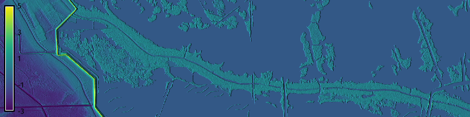
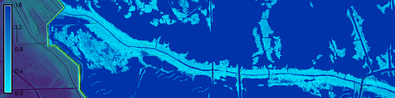
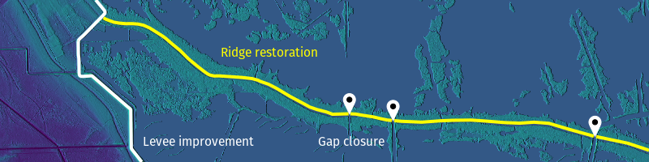
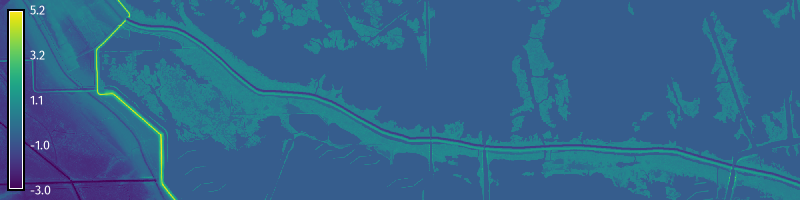
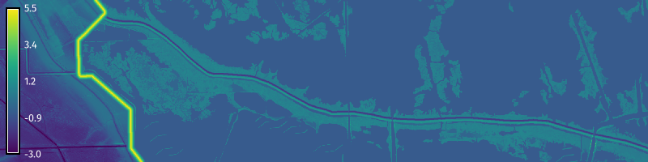
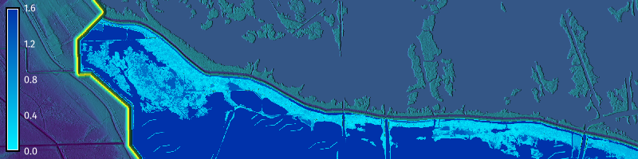

# Import libraries
import os
import sys
import subprocess
from pathlib import Path
import urllib.request
from zipfile import ZipFile
# Find GRASS Python packages
sys.path.append(
subprocess.check_output(
["grass", "--config", "python_path"],
text=True
).strip()
)
# Import GRASS packages
import grass.script as gs
import grass.jupyter as gj
# Set GRASS database
gisdbase = os.path.join(Path.home(), "grassdata")
# Download dataset
url = "https://zenodo.org/records/15870442/files/bayou_lours.zip?download=1"
filepath = os.path.join(gisdbase, "bayou_lours.zip")
try:
urllib.request.urlretrieve(url, filepath)
except Exception as e:
print(f"Error downloading file: {e}")
# Unarchive dataset
with ZipFile(filepath, 'r') as archive:
archive.extractall(gisdbase)
# Delete archive
os.remove(filepath)
# Start GRASS in Bayou L'Ours project
session = gj.init(Path(gisdbase, "bayou_lours"))Earthworks: Modeling Coastal Infrastructure
tutorial
grass
python
Model levees and alluvial ridges with r.earthworks.

Learn the how to model levees and ridges with r.earthworks. Download the Bayou L’Ours Dataset. The coordinate reference system for this project is Louisiana State Plane South in meters. We will model two of the coastal infrastructure projects in the Louisiana Coastal Protection and Restoration Authority’s 2023 Coastal Masterplan. Improvements are planned to the Larose to Golden Meadow Levee System which will raise existing earthen levees to an elevation between 3.6-6.4 meters NAVD88. The Bayou L’Ours Ridge Restoration project will restore the natural levee by closing gaps, rebuilding landforms, and reforesting uplands. While the improved levee system will better protect the towns, the restored ridge will attenuate storm surge. This tutorial covers:
- Visualizing existing conditions
- Modeling ridge restoration
- Modeling levee improvement
- Modeling gap closure
- Simulating flooding
NoteComputational notebook
This tutorial can be run as a computational notebook. Learn how to work with notebooks in the tutorial Get started with GRASS & Python in Jupyter Notebooks.
Setup
Project
Download and unarchive the Bayou L’Ours Dataset. Then start a GRASS session in the Bayou L’Ours project. Since the dataset is approximately 120MB, it may take a couple minutes to download.
grass ~/grassdata/bayou_lours/PERMANENTInstallation
Install r.earthworks with g.extension.
g.extension extension=r.earthworks# Install extension
gs.run_command("g.extension", extension="r.earthworks")Region
Use g.region to set the extent and resolution of the computational region.
g.region n=105100 s=102600 w=1105000 e=1115000 res=5# Set region
gs.run_command("g.region", n=105100, s=102600, w=1105000, e=1115000, res=5)Existing Conditions
Use hillshading, flood simulations, and data from the Louisiana Coastal Protection and Restoration Authority to visualize the existing conditions and the proposed plans for coastal infrastructure. The existing ring levee system - in the west of our study area - protects the communities of Larose, Cutoff, Galliano, and Golden Meadow along Bayou Lafourche. This section of the levee is between 4.5-5 meters high. It may be raised as high as 6.4 meters to provide protection from 100-storms. The alluvial ridge along Bayou L’Ours - which runs through the middle of our study area - has eroded, subsided, and been cut apart by oil and gas exploration canals. The gaps should be closed with sheet pile structures, the ridge rebuilt to an elevation of 1.5 meters NAVD88, and its uplands reforested. Once restored this natural levee would attenuate storm surge and provide upland coastal habitat.
Imagery
Use r.relief for hillshading and d.shade to drape the imagery over the hillshade. Adjust the brighten parameter to better illuminate the map.
r.relief input=elevation output=relief zscale=10
d.shade shade=relief color=imagery brighten=36# Model relief
gs.run_command("r.relief", input="elevation", output="relief", zscale=10)
# Display imagery
m = gj.Map(width=800)
m.d_shade(shade="relief", color="imagery", brighten=36)
m.show()
m.save("images/levees-01.webp")
Terrain
Use d.shade to drape the elevation over the hillshade.
d.shade shade=relief color=elevation brighten=36
d.legend raster=elevation digits=0 color=white at=5,95,1,3# Display elevation
m = gj.Map(width=800)
m.d_shade(shade="relief", color="elevation", brighten=36)
m.d_legend(raster="elevation", digits=0, color="white", at=(5, 95, 1, 3))
m.show()
m.save("images/levees-02.webp")
Flood Simulation
Use r.lake to model inundation from storm surge. Set the water level to one meter and the coordinates to 1109000, 102750. The simulation will show that the degraded ridge would be overtopped by a meter of surge.
r.lake elevation=elevation water_level=1 lake=flooding coordinates=1109000,102750
d.shade shade=relief color=elevation brighten=36
d.rast map=flooding
d.legend raster=flooding digits=1 color=white at=5,95,1,3# Simulate flooding
gs.run_command(
"r.lake",
elevation="elevation",
water_level=1,
lake="flooding",
coordinates=[1109000, 102750]
)
# Display flooding
m = gj.Map(width=800)
m.d_shade(shade="relief", color="elevation", brighten=36)
m.d_rast(map="flooding")
m.d_legend(raster="flooding", digits=1, color="white", at=(5, 95, 1, 3))
m.show()
m.save("images/levees-03.webp")
Coastal Restoration
Map the proposed coastal infrastructure projects. Layer the vector maps of proposed ridge restoration, levee improvement, and gap closure projects over the shaded relief.
d.shade shade=relief color=elevation brighten=36
d.vect map=levees color=white width=4
d.vect map=ridges color=yellow width=4
d.vect map=gaps icon=basic/pin_dot size=25 color=white fill_color=white
d.text text="Levee improvement" color=white size=7 at=22,10
d.text text="Ridge restoration" color=yellow size=7 at=34,65
d.text text="Gap closure" color=white size=7 at=49,10
d.legend raster=flooding digits=1 color=white at=5,95,1,3# Display projects
m = gj.Map(width=800)
m.d_shade(shade="relief", color="elevation", brighten=36)
m.d_vect(map="levees", color="white", width=4)
m.d_vect(map="ridges", color="yellow", width=4)
m.d_vect(map="gaps", icon="basic/pin_dot", size=25, color="white", fill_color="white")
m.d_text(text="Levee improvement", color="white", size=7, at=(22,10))
m.d_text(text="Ridge restoration", color="yellow", size=7, at=(34,65))
m.d_text(text="Gap closure", color="white", size=7, at=(49,10))
m.show()
m.save("images/levees-04.webp")
Ridge Restoration
Use r.earthworks to model the restored ridge and the borrow needed to build it. The restored ridge should have a crest elevation of 1.5 meters, a crest width of 15.2 meters, and 20% slopes with a ratio of 5H:1V, i.e. a horizontal run of 5 meters for a vertical rise of 1 meter. The soil to rebuild the ridge should be taken onsite from an adjacent borrow area that would be offset by 7.6 meters from the foot of the ridge.
Borrow Area
Start by modeling the borrow area - an excavation for sourcing material for construction - needed to restore the ridge. To model the borrow area, offset the proposed ridge and then perform a cut operation. First use v.transform to shift the vector map of the proposed ridgeline 36 meters to the north. Then use a cut operation with r.earthworks to model the borrow area. Set elevation to the elevation raster, lines to the borrow vector, z to -1.5, linear to 0.2, and flat to 7.6.
v.transform input=ridges output=borrow yshift=36
r.earthworks elevation=elevation earthworks=earthworks operation=cut lines=borrow z=-1.5 linear=0.2 flat=7.6
d.rast map=earthworks
d.legend raster=earthworks color=white at=5,95,1,3# Shift ridgeline
gs.run_command("v.transform", input="ridges", output="borrow", yshift=36)
# Model borrow
gs.run_command(
"r.earthworks",
elevation="elevation",
earthworks="earthworks",
operation="cut",
lines="borrow",
z=[-1.5],
linear=0.2,
flat=7.6
)
# Visualize
m = gj.Map(width=800)
m.d_rast(map="earthworks")
m.d_legend(raster="earthworks", color="white", at=(5, 95, 1, 3))
m.show()
m.save("images/levees-05.webp")Ridge
Use a fill operation with r.earthworks to model the restored ridge. Set elevation to the earthworks raster, lines to the ridge vector, z to 1.5, linear to 0.2, and flat to 7.6.
r.earthworks elevation=earthworks earthworks=earthworks operation=fill lines=ridges z=1.5 linear=0.2 flat=7.6 --overwrite
d.rast map=earthworks
d.legend raster=earthworks color=white at=5,95,1,3# Model ridges
gs.run_command(
"r.earthworks",
elevation="earthworks",
earthworks="earthworks",
operation="fill",
lines="ridges",
z=1.5,
linear=0.2,
flat=7.6
)
# Visualize
m = gj.Map(width=800)
m.d_rast(map="earthworks")
m.d_legend(raster="earthworks", color="white", at=(5, 95, 1, 3))
m.show()
m.save("images/levees-06.webp")
Levees
Use a fill operation with r.earthworks to model the improved levee. The improved levee should have a crest elevation of 5.5 meters, a crest width of 1.5 meters, and 10% slopes with a ratio of 10H:1V. For r.earthworks set elevation to the earthworks raster, lines to the levee vector, z to 5.5, linear to 0.1, and flat to 1.5.
r.earthworks elevation=earthworks earthworks=earthworks operation=fill lines=levees z=5.5 linear=0.1 flat=1.5 --overwrite
d.rast map=earthworks
d.legend raster=earthworks color=white at=5,95,1,3# Model levees
gs.run_command(
"r.earthworks",
elevation="earthworks",
earthworks="earthworks",
operation="fill",
lines="levees",
z=5.5,
linear=0.1,
flat=1.5
)
# Visualize
m = gj.Map(width=800)
m.d_rast(map="earthworks")
m.d_legend(raster="earthworks", color="white", at=(5, 95, 1, 3))
m.show()
m.save("images/levees-07.webp")
Gap Closure
Use a fill operation with r.earthworks to model gap closures with sheet pile structures. These structures are walls built from rows of interlocking vertical segments of piles that are driven into the ground. Set elevation to the earthworks raster, lines to the gaps vector, z to -0.6, linear to 1, and flat to 10. The radius of flats should be set to the region resolution to ensure that the gaps are fully closed because we test our design with a flood simulation. To better visualize the results, use r.relief and d.shade for hillshading.
r.earthworks elevation=earthworks earthworks=earthworks operation=cutfill lines=gaps z=-0.6 linear=1 flat=10 --overwrite
r.earthworks elevation=earthworks earthworks=earthworks operation=cutfill lines=closures z=1.37 linear=1 flat=5 --overwrite
r.relief input=earthworks output=relief zscale=10 --overwrite
d.shade shade=relief color=earthworks brighten=36
d.legend raster=earthworks color=white at=5,95,1,3# Model gaps
gs.run_command(
"r.earthworks",
elevation="earthworks",
earthworks="earthworks",
operation="cutfill",
lines="gaps",
z=-0.6,
linear=1,
flat=10
)
# Model gap closures
gs.run_command(
"r.earthworks",
elevation="earthworks",
earthworks="earthworks",
operation="cutfill",
lines="closures",
z=1.37,
linear=1,
flat=5
)
# Model relief
gs.run_command("r.relief", input="earthworks", output="relief", zscale=10)
# Visualize
m = gj.Map(width=800)
m.d_shade(shade="relief", color="earthworks", brighten=36)
m.d_legend(raster="earthworks", color="white", at=(5, 95, 1, 3))
m.show()
m.save("images/levees-08.webp")Flood Simulation
Test proposed coastal infrastructure with simulated storm surge. Use r.lake to model inundation from storm surge over the earthworks raster. Set the water level to one meter and the coordinates to 1109000, 102750. The simulation will show that the restored ridge with closed gaps would be not overtopped by a meter of surge.
r.lake elevation=earthworks water_level=1 lake=flooding coordinates=1109000,102750
d.shade shade=relief color=earthworks brighten=36
d.rast map=flooding
d.legend raster=flooding digits=1 color=white at=5,95,1,3# Simulate flooding
gs.run_command(
"r.lake",
elevation="earthworks",
water_level=1,
lake="flooding",
coordinates=[1109000,102750]
)
# Visualize
m = gj.Map(width=800)
m.d_shade(shade="relief", color="earthworks", brighten=36)
m.d_rast(map="flooding")
m.d_legend(raster="flooding", digits=1, color="white", at=(5, 95, 1, 3))
m.show()
m.save("images/levees-09.webp")